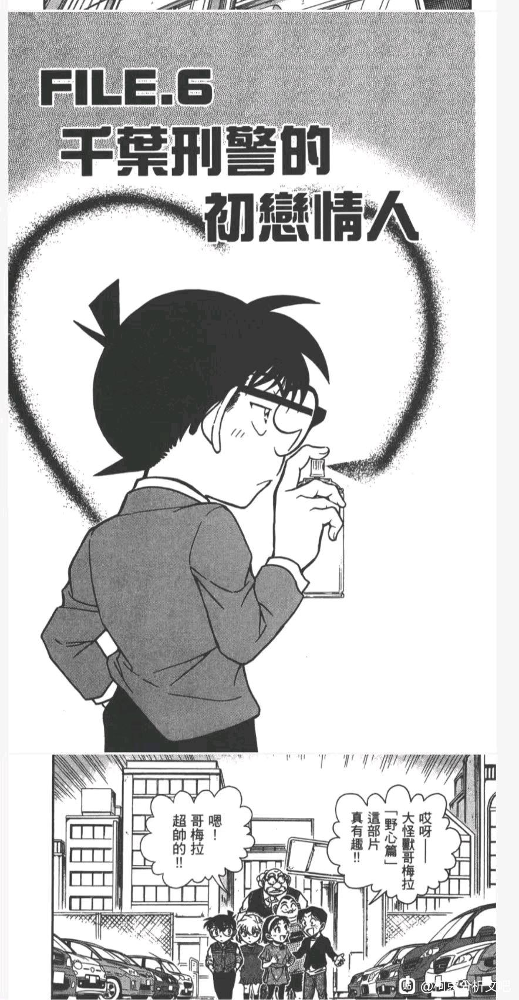
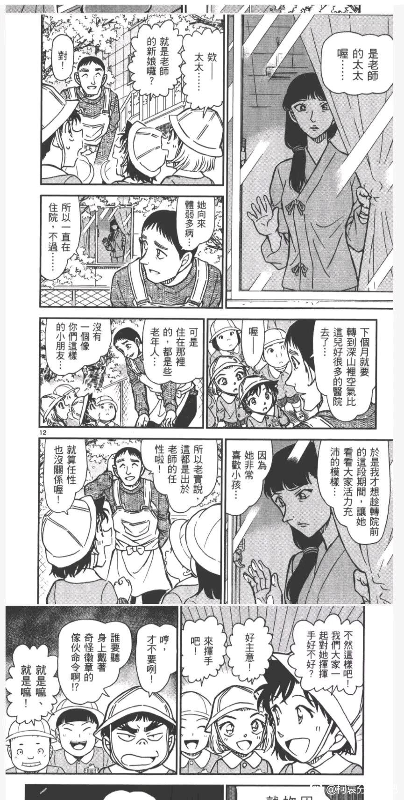

（加一个看漫画发现的千苗与sr的对比）
因为杯子效应那一话注意到哀的帽子，觉得帽子在名柯cp中出现的频率有点高，简单写一下基于千苗和博士芙莎绘与新志初遇情景的构想，以及看漫画章节分布中发现的有意思的东西
再会篇镇楼
因为杯子效应那一话注意到哀的帽子，觉得帽子在名柯cp中出现的频率有点高，简单写一下基于千苗和博士芙莎绘与新志初遇情景的构想，以及看漫画章节分布中发现的有意思的东西
再会篇镇楼
1.镇楼图提到再会篇，补充一下，看漫画发现的：新出医生出现正是在第24卷黑组再会篇，并且在新出医生家里案件后，下一话紧接着，就是眼睛超人1.0的黑组再会篇了，73在漫画里的章节排布真的很有意思。他本不用这样，却偏偏这么画了
2.博士与芙莎绘的银杏初恋。芙莎绘也有因为外貌特征被霸凌，跟小志保很像，特别是m26这个伏笔还回收了，那么这个线索对于新志线来说重要程度也加深了（当然这里还有加深宫野母女感情和形象的用处，透子回忆里艾莲娜也反对种族歧视）。其次就是芙莎绘小时候和现在都带着帽子，杯子效应里哀的帽子也是芙莎绘品牌的银杏叶。那满天飞舞的银杏，觉得好类似雪花飞舞的情景。而且杯子效应里，哀的帽子银杏花纹不是一片银杏，是类似波点排布的很多片银杏，跟博士芙莎绘小时候故事里飞舞的银杏，好像~而且，是青梅竹马分离过，女方没忘，但男方忘记了。
3.千叶苗子。最早出现千苗感情线，在第71卷，伦敦篇之前，是的就是伦敦篇的前一话。这一话的讲了少侦帮千叶查看录像带找关于苗子的线索。这一话里是千苗小时候的故事，苗子想闯红灯千叶拉住了她，苗子立刻就停了不过哭了。嗯？等等？拉住，哭泣，伦敦篇？好，既然后一话就是伦敦篇，先来对比一下千苗和sr。苗子打算闯红灯，千叶拉住了苗子，给她讲道理，大概意思是不以恶小而为之否则会变成坏习惯，苗子停下，知道自己错了，哭泣中的情绪是对自己行为的愧疚（对自我）；sr，九点钟大笨钟有整点响声，毛利兰发现了新一在伦敦，开始情绪爆发，新一没法让她停下来给线索破案，开始半小时追逐，拖着刚吃药的不适身体跑了半小时，大笨钟显示九点半，终于拉住了毛利兰，毛利兰还在哭泣，哭泣中的情绪是对新一的怨怼（对他人），最终新一不是用道理而是用情感策略稳定了毛利兰的情绪。就在前后章节同时出现男方拉着停下女方的情节，对比却如此惨烈...还是那句话，73本不用这样，但他偏偏这么画了
（补充一点在千苗小时候故事看到的个人联想：小柯张开的手掌？若狭标志性动作？水下浸泡后的回应的“我也喜欢你❤️”？m26？？？？）
（补充一点在千苗小时候故事看到的个人联想：小柯张开的手掌？若狭标志性动作？水下浸泡后的回应的“我也喜欢你❤️”？m26？？？？）
2024-04-01 17:10 | Anna_Chong:千叶拉住苗子，此时苗子是小学生心智；新一拉不住毛利兰跑了半小时终于拉住了，但还得打感情牌才能稳定住兰的情绪，此时的兰高二...前后紧凑的章节有相似的cp互动情景，对比却过于惨烈了...
3.继续千叶苗子。千苗升温案件（虽然还是没相认，是苗子悄悄给了很多巧克力给千叶，瘦下来帅了很多的、很多女警准备追的千叶又变胖了），千叶UFO事件，这一话接在了小柯看到哀揉下的眼线痕迹发现了玛丽可能是哀潜在的亲人，而且这一话所在的卷面，是一棵圣诞树。然后接在千苗线这一话之后，就是秀吉由美结婚申请书那一话，封面图是只填了男方工藤新一的结婚申请书。well，真的感觉只要出了哀身世的线索柯很在意的章节后，迫不及待堆一些情侣故事来映衬，或者前面先切割出兰有其他潜在感情线（新出医生）然后大画柯哀线，生怕你不产生柯哀是爱情故事的联想。就是这种感觉。漫画章节排布真的很有意思啊！！在最后千苗线回收到相认时的章节里，图中柯看着苗子飘在空中的帽子，空中还飘舞着什么？小柯你在想什么呢？是空中飞舞的雪花和圣诞帽吗？喷着涂鸦画画，像不像圣诞涂鸦在玻璃窗外的小孩子玩乐呢？13年前的往事，小新一，你想起来那位小女孩了吗？


2024-04-01 16:57 | Anna_Chong:千叶苗子也是女方没忘记，男方忘了，需要案件或者事件想起，跟博士芙莎绘一样
发布的那么早？
2024-04-01 18:19 | Anna_Chong:ﾉ☀
4.哦？樱花班里也有帽子？那为什么小小的图里都画上了标志性的角，而这么大的扉页里，却没有画呢？印象中满天飞舞的，是樱花？还是，雪花？笑容来自有角的女孩子？还是没有角的、圣诞节满天飞雪里的戴着圣诞帽的、某位自称小兔子的小女孩呢...？

2024-04-02 16:13 | 阿v恶露天:我去2024-04-02 22:04 | 江♂落夕:园子真的好好看啊，别戴发箍了美女富婆姐姐~2024-04-02 22:41 | 王道球球:2024-04-03 04:43 | 乘UFO的ET:哇这个发现很有趣啊，扉页这里特意没画角，果然是柯子小时候的记忆有点错乱吗
woc这个有道理，全篇都是带角的就扉页不画，旁边还有个大兰内酱2024-04-03 11:08 | Anna_Chong:回复 乘UFO的ET :还发现一点：扉页这里就算大兰不笑小兰也要笑的，这才符合整个樱花班表面上描写大男主的最初动心来自微笑的逻辑，因为这是服务于描写大男主爱情的篇章。如果不符合这种刻画逻辑，那么只能是雷了
5.柯哀的帽子与新志的帽子。其实我个人认为，帽子有种类似女王皇冠👑的要素（西洋棋理论认为哀是白女王），也象征不揭开帽子的掩盖无法获得真相，比如苗子不敢见千叶总会把自己的脸藏在帽子下，就像小柯现在仍无法回忆起13年前自己还是小新一时与小志保的相遇，这个“帽子”，目前因被盖住而看不到真相的，是柯这一方，即柯的爱而不自知（类似佐藤是后来才知道自己早就慢慢爱上高木了）。漫画里也刻画有柯给哀戴上帽子，对呀就是竞技场胁迫事件，简单来说，就是认识第二天就拉手手希望哀跟他一起享受足球比赛那一话（笑）！那一案件里，哀戴着帽子被人认错是小男生，也意味着哀戴着帽子就表示掩盖住了真相。还有一话是：超秘密的上学路，是基尔篇中途，上学柯还戴着帽子呢，出现“跟灰原相像的女生不见了”，下一步出学校哀就戴上柯的帽子了，（哀因为不想三小担心说的“换造型”，我想到戴帽子造型的是福尔摩斯诶！！好好好，不愧是二分之一的福尔摩斯，帽子共享的噻！）。这些帽子都是柯给哀戴上的，就像他现在仍认为自己喜欢的就是毛利兰，感情不开窍的状态也让他理所当然停留在自己给自己画下的“感情状态就是喜欢毛利兰”的设置，只不过柯在爱情上知行没合一，行动上与哀的相处没有边界感；哀也没有拒绝柯的帽子，你让我戴上，我没有理由不戴上，真相虽被动被掩盖，但是真相一直在。等到哪天幕揭起，等到哪天雾散去。届时视线里是满天飞雪，空气中回荡的是圣诞颂歌...

2024-04-24 19:06 | 樱一ww:哀被认为是男孩子。。。。。那初遇的时候新一对志保的认知会不会也觉得她是男孩子
6.附一张杯子效应那一话的图啦：
2024-04-01 18:04 | Anna_Chong:这个视角好明显柯哀的杯子摆得比高佐还近2024-04-02 06:46 | 贴吧用户_aeZS2J4:高佐可已经是稳稳的甜甜的小情侣了诶，这个嘛
别问，问就是空间扭曲了
回复 贴吧用户_aeZS2J4 :四个杯子大可以对齐，73一定要这么画，那么只能说明这俩身体小的人偏要挨着坐，靠的估计比高佐还近2024-04-02 07:46 | Anna_Chong:回复 贴吧用户_aeZS2J4 :是的呢。明明可以简单直接画成个平行四边形，偏偏是梯形


我一直认为柯哀二人都不记得当年的初遇了，比如寻找玛利亚那个饮水鸟哀感觉在哪里看过，说明她不记得了。但是蓝色古堡哀的那句“这是你最喜欢的暗号吧，不是吗？”又有些突兀。另外我觉得帽子不是次次出现都有深意，但是这里的帽子肯定有深意——警徽上应该是樱花，正文中也是樱花，但是扉页是星星。
每次哀带帽子大概率会有特别的事情发生
帽子确实很有可能，而且帽子直接把哀的头发盖住，柯南后来忘了也能解释了
7.补一个看少年工藤新一事件的里关于帽子，漫画里小柯拿着福尔摩斯蓝宝石案，里面讲到一只被抓错的腹中不是真正有宝石的鹅和留下的帽子为案件线索。我在自己写的上一篇帖子有蓝宝石案的一些内容截图，蓝宝石案刚好是圣诞节的案件。https://tieba.baidu.com/p/8955784345?share=9105&fr=sharewise&see_lz=0&share_from=post&sfc=copy&client_type=2&client_version=12.54.1.1&st=1712059162&is_video=false&unique=F3734C9E5454DFE2847BB442A4EC7C90
2024-04-02 08:02 | Anna_Chong:https://tieba.baidu.com/p/8955784345?share=9105&fr=sharewise&see_lz=0&share_from=post&sfc=copy&client_type=2&client_version=12.54.1.1&st=1712059162&is_video=false&unique=F3734C9E5454DFE2847BB442A4EC7C90
8.跨越时空的樱花之恋，即白鸟归林附近的章节排布也很有意思，也有很多帽子元素。第66卷file1，就是小柯带帽子伪装钓鱼破案；接着就是白鸟在案件的发生和少侦的陪伴下，弄清楚了自己喜欢的人。这个案件里，就有帽子伪装的情节，女fr把帽子戴在了白鸟头上伪装不在场证明；然后这一话的后一话，少侦一起装扮成福尔摩斯哦~戴帽子的cos在名柯世界除了基德sama还有就是福尔摩斯皮肤了吧（嗯这一案恰好就是关于基德sama的）；再后面一话，就是和叶弄丢护身符，发现是平次弄错了两个护身符（弄错、认错？樱雪错位？），是平和青梅竹马的爱情故事，而且平次有个设定就是转帽子和破案状态关联，又是帽子元素；再后一话，就是柯想到哀穿歌德萝莉装的那一案（在黑暗组织中长大的少女）...脑子里是对哀穿萝莉装的想象，眼前看到的是兰和园子穿甜美风萝莉装。而且这个+型吊饰有着jdj的元素，别忘了新一的别称是什么哦：是“立本阿sir的jsz”诶紧接着是下一卷第67卷，事件黑色13的暗示（又出现了，13），就是把衣服摆成水手动作那一案，最后揭露了暴风雪中（又是雪）的真相。这一案有赤井和透子，透子就戴着帽子伪装秀一，朱蒂拿着帽子找秀一，又是帽子元素。再下一案，就是白鸟归林了，小林老师认出了白鸟。这一案里，小林老师认错了fr的性别（认错性别在柯哀中，就是竞技场事件哀戴了柯的帽子被误认为是小男生），本来这里马尾和手肘当成胸部就够了，其实帽子不是重要元素，黑暗中也看不到样子和胡子，但是73偏偏加了个帽子元素。这几案是连着出现的，如果新志初遇论是证明题，全部都能对上了

9.樱花班回忆的前一个案件，blog女演员密室事件，又有帽子元素。而且这里还有一间504的房间（我新的生日0504），柯对着房间的内心独白：“将过去的错误，永远加以封印”。
cy